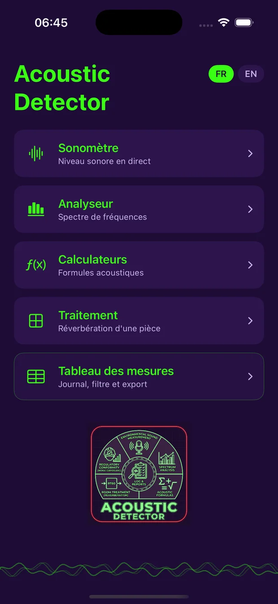
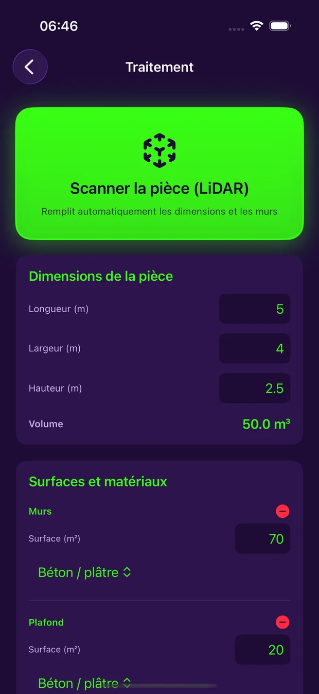
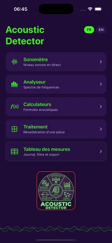
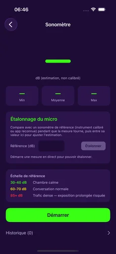
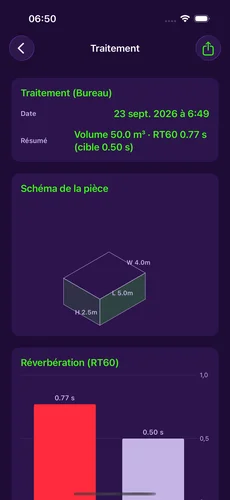
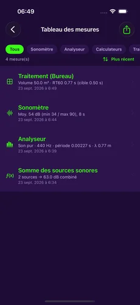

Live sound meter
Measures sound level in real time, with two chart styles (Festival, Studio) to visualize readings.
Listen. Analyze. Correct.
A field tool that combines a sound level meter, spectrum analyzer, acoustic calculator, and room-treatment planner — with 3D LiDAR scanning to automatically fill in dimensions and walls. Everything works 100% offline.

Measure · Calculate · Correct
Built to be used right on the job site or in the studio, with no internet connection.
Measures sound level in real time, with two chart styles (Festival, Studio) to visualize readings.
Manual calibration against a reference instrument to sharpen the accuracy of every reading.
Live frequency analysis (FFT) with automatic classification of the sound source type.
Logarithmic sum of sound sources, sound pressure level, period and wavelength.
Calculates reverberation time (RT60, Sabine formula) and recommends the acoustic foam needed.
On iPhone Pro: automatically fills in dimensions and the surface area of every detected wall.
A proportioned room diagram, generated from entered or scanned dimensions.
Every measurement logs to a central table, exportable as a full PDF report with charts.
Full French and English interface. No data ever sent to a server.
Exclusive to Acoustic Detector
On an iPhone Pro, point the camera and let LiDAR measure the room. Every detected wall automatically becomes a surface with its real area — no need to grab a tape measure to plan an acoustic treatment.
No other consumer app offers this level of automation for acoustic treatment planning.

Preview
Deep mauve and neon green — an app you can read at a glance, even in bright daylight on site.




$19.99 CADOne-time purchase · no subscription · no in-app purchases
Contact
Acoustic Detector is developed in Québec by JDG Entrepreneur général inc. Every message gets a personal reply.
Found a bug or have a suggestion?
Support page
Press kit and visuals available on request.
j_david@live.ca
What the app does — and doesn't do — with your data.
Read the policy